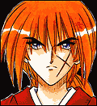
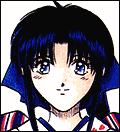
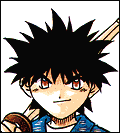
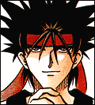
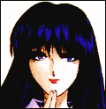
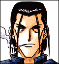
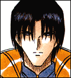
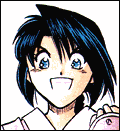
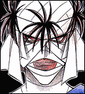

|  | Before the end of the Tokugawa period, Kenshin was a killer for the government. He disappeared during the final battle that led to the downfall of the Tokugawa Shogunate. After the Meiji Restoration in 1868, he saw the error of his ways and wandered Japan as a ronin (masterless samurai) for ten years. Upon meeting Kaoru, his life changes and he begins to settle down and begin to care about people once again. His school of fighting is the Hiten Mitsurugi Ryuu, which specializes in quick sword strikes that kill instantly. He was given the name "Battosai," which means "master of sheathing a sword," because his attacks were so fast. However, at the end of the Meiji Restoration, Kenshin renounces killing and uses only a sakabatou (reversed-blade sword). He now uses his sword to protect rather than kill. |
|  | Since her father was killed in the war, responsibility for running the family doujo fell to young Kaoru. She is the one who first identifies Kenshin as Hitokiri Battosai and challenges him to a fight. Her pure heart and gentleness touch Kenshin and he accepts her offer to stay at the doujo. As the story progresses, their relationship continues to grow, and Kaoru seems to be harboring feelings for Kenshin. Feelings that she won't openly admit, however. And when she gets angry, Kenshin usually bears the brunt of her rage. |
|  | Son of a samurai, Yahiko fancies himself a samurai as well. He is a little young to truly fit the bill, but his heart is in the right place. And after being rescued by Kenshin from the thieves guild, he finds a home at the Kamiya doujo. Kaoru begins schooling him in her family's fighting techniques. Thus, Yahiko joins his surrogate family at the doujo. In this environment, he resolves to become as great a fighter as he can be. He idolizes Kenshin and wants to become as strong as he is so he can protect the ones he loves. |
|  | When he was young, Sanosuke was a junior member of the Sekihora squad. When the squad was betrayed by the Meiji government, he saw its leader and his idol, Sagara Souzo, beheaded. As a result, Sanosuke hates the Meiji government. To honor his fallen idol, he took the surname of Sagara. He wears the chinese character for "evil" on his back. He is incredibly strong and uses a very large sword to defeat his enemies. It took defeat at the hands of Kenshin to make him realize that he was going about things the wrong way, and he too joined the others at the Kamiya doujo. |
|  | The daughter of a renowned doctor, she is the only surviving member of her family. The doctor she was working for in Tokyo was helping another to distill opium. When this doctor was killed, Megumi was forced to help in the manufacture of the opium. When she met Kenshin and Sanosuke, she managed to break free of the terrible life she was forced to lead. When she was freed, she became the local doctor for the area around the doujo. Her medical skills are exceptional and she often finds herself dressing wounds that the others sustain in battle. She is attracted to Kenshin. |
|  | Saito is based on an actual historical figure. Saito was a member of the Shinsengumi, but after the Meiji Restoration, he joined the police force. His motto is "Kill whoever is evil," which is why he joined the police. He and Kenji have had past encounters and although Saito considers Kenshin an enemy, he forms an alliance with him later on in the series to defeat a greater evil. |
|  | The head of the Oniwabanshuu (Ninjas), Aoshi becomes consumed with revenge against Kenshin. When they first fought, Kenshin defeated him; Aoshi wants a rematch to reclaim honor for the Oniwabanshuu. He becomes so obsessed with defeating Kenshin that he even betrays his fellow ninjas and allies himself with Shishio. |
|  | A young ninja Kenshin meets en route to Kyoto, Misao is a rather headstrong girl. At first she journeys with Kenshin rather reluctantly, but when she is betrayed by Aoshi, she joins his cause. She is the granddaughter of the former head of the ninja clan. |
|  | Shishio succeeded Kenshin as "Hitokiri," and his methods were much more aggressive. He became embroiled in so many dirty dealings in fact that the Meiji Government ordered him killed, because what he knew could destroy the new government. Despite being wounded and set afire, Shishio survived. Now enraged, Shishio seeks to claim power for himself and the destruction of the Meiji Government for its betrayal. His goals is power absolute; he does not care who or what gets in his way. |